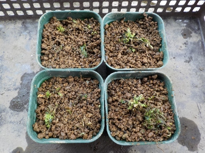
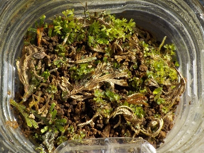
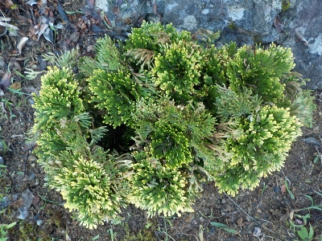
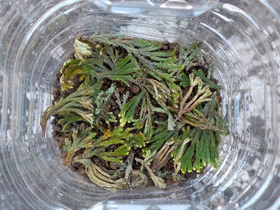
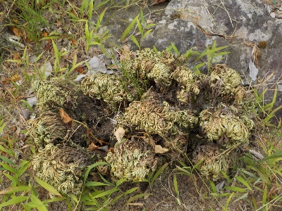
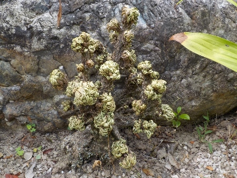

イワヒバをペットボトルから出しました。
2025/10/05

以前より小さくなった気がします。ペットボトルの環境が悪かったんじゃないのと思い植え替えしました。
もう苔なんだかイワヒバなんだか雑草なんだかわかりにくいです。
まだまで小さいので日陰管理です。AIに聞いたら2-5年はこのまま明るい日陰で育ててくださいとのことでした。長いなー
2025/10/05

以前より小さくなった気がします。ペットボトルの環境が悪かったんじゃないのと思い植え替えしました。
もう苔なんだかイワヒバなんだか雑草なんだかわかりにくいです。
まだまで小さいので日陰管理です。AIに聞いたら2-5年はこのまま明るい日陰で育ててくださいとのことでした。長いなー
2025/05/04

古い葉っぱが枯れて新しい芽が出ているんですが、小さいのでよくわからないです。
この苔みたいな感じのものが、これからどう成長するんだろう？
2024/08/31

大量に雨が降ったので、縮んでいたイワヒバが復活しました。
周辺の雑草を抜いていたら、小さい葉っぱのクズが落ちていたので拾いました。

挿し木みたいに増えないかなと思い、小さい葉っぱをペットボトルに入れました。
これで増殖したら簡単でいいんだけどな。
2024/08/25

雨が降らなくて小さい木が枯れていますが、イワヒバは緑の状態です。

枯れ木の後にこのイワヒバを増やして植えたいです。
でもイワヒバの成長は遅いらしいので、他のものを植えた方が堅実かな。
イワヒバは木でも草でもない。